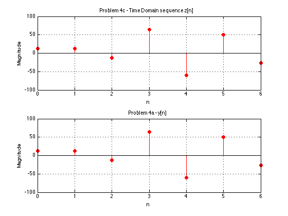

ECE308 - Spring 2015 - Pratik Sampat
n = 0:40;
omega = 0.1*2*pi;
phase_offset = 0;
A = 1.5;
arg = omega*n - phase_offset;
xn = A * cos(arg);
stem(n,xn);
axis([0 40 -2 2]);
title('x[n]=1.5*cos(0.2\pi)');
xlabel('n');
ylabel('x[n]');
grid;
n = 0:0.1:40;
omega = 0.1*2*pi;
phase_offset = 0;
A = 1.5;
arg = omega*n - phase_offset;
xn = A * cos(arg);
plot(n,xn);
axis([0 40 -2 2]);
title('x[n]=1.5*cos(0.2\pi)');
xlabel('n');
ylabel('x[n]');
grid;
n = 0:0.1:50;
omega = 0.4*2*pi;
phase_offset = pi/2;
A = 3;
arg = omega*n - phase_offset;
xn = A * cos(arg);
plot(n,xn);
axis([0 40 -4 4]);
title('x[n]=3*cos(0.8\pi - \pi/2)');
xlabel('n');
ylabel('x[n]');
grid;
t = 0:0.01:50;
x1 = 2*sin(3*t - (pi/2)) - cos(2*t);
figure(1)
plot(t,x1,'linewidth',2)
axis([0 50 -3 3]);
xlabel('t')
ylabel('x(t)')
title('Problem 2a - 2sin(3t - \pi/2) - cos(2t)')
grid
t = -5:0.01:5;
x2 = (t+2).*(t>=-2) - 2.*t.*(t>=0) + ((2.*(t-4) + 2).*(t>=4));
figure(2)
plot(t,x2,'linewidth',2)
axis([-5 5 -2 2]);
xlabel('t')
ylabel('x(t)')
title('Problem 2b - (t+2)u(t+2) - 2tu(t) + (2(t-4) + 2)u(t-4)')
grid
clear all
n = [0:20];
x = [1 0 1];
h = 2*(3.^n);
y = conv(x,h);
t = [0:length(y)-1];
p = stem(t, y, 'r', 'filled');
set(p, 'LineWidth',2,'MarkerSize',4);
title('Problem 3a - y[n]= x[n] * h[n]');
xlabel('n');
ylabel('y[n]');
clear all
n = [0:20];
x = ((1/3).^n).*(n>=0);
h = ((1/2).^(n-1)).*(n>=1);
y = conv(x,h);
t = [0:length(y)-1];
p = stem(t, y, 'r', 'filled');
set(p, 'LineWidth',2,'MarkerSize',4);
title('Problem 3b - y[n]= x[n] * h[n]');
xlabel('n');
ylabel('y[n]');
clear all
n = [0:6];
x = [3 7 1 9];
h = [4 -5 6 -3];
y = conv(x,h);
p = stem(n, y, 'r', 'filled');
set(p, 'LineWidth',2,'MarkerSize',4);
title('y[n]= x[n] * h[n]');
xlabel('n');
ylabel('y[n]');
H = fft(h,32);
w = [0:31];
subplot(2,1,1); p = stem(w/32, abs(H), 'k');
set(p, 'Linewidth',2);
title('FFT Magnitude');
xlabel('n');
ylabel('Magnitude');
grid on;
subplot(2,1,2); p = stem(w/32, angle(H), 'k');set(p, 'Linewidth',2);
title('Angle');
xlabel('n');
ylabel('angle');
grid on;
X = fft(x,32);
Z = X.*H;
z = ifft(Z);
n1 = [0:31];
subplot(2,1,1); p = stem(n1, z, 'r', 'filled'); axis([0 6 -100 100]);
title('Problem 4c - Time Domain sequence z[n]');
xlabel('n');
ylabel('Magnitude');
grid on;
subplot(2,1,2); p = stem(n, y, 'r', 'filled');
title('Problem 4a - y[n]');
xlabel('n');
ylabel('Magnitude');
grid on;

clear all
[x,fs,nbits] = wavread('clap.wav');
X = fft(x);
w = [0:length(x)-1];
subplot(2,1,1); p = plot(w/15170, x,'k'); set(p, 'Linewidth',2);
title('Time domain');
xlabel('n');
ylabel('x');
grid on;
subplot(2,1,2); p = plot(w/15170, abs(X),'k'); set(p, 'Linewidth',2);
title('Magnitude of X');
xlabel('n');
ylabel('x');
grid on;
clear all
[x,fs,nbits] = wavread('voice.wav');
X = fft(x);
w = [0:length(x)-1];
subplot(2,1,1); p = plot(w/length(x), x,'k'); set(p, 'Linewidth',2);
title('Time domain');
xlabel('n');
ylabel('x');
grid on;
subplot(2,1,2); p = plot(w/length(x), abs(X),'k'); set(p, 'Linewidth',2);
title('Magnitude of X');
xlabel('n');
ylabel('x');
grid on;